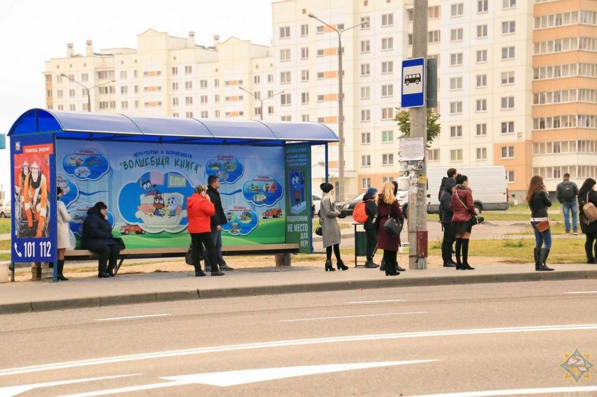
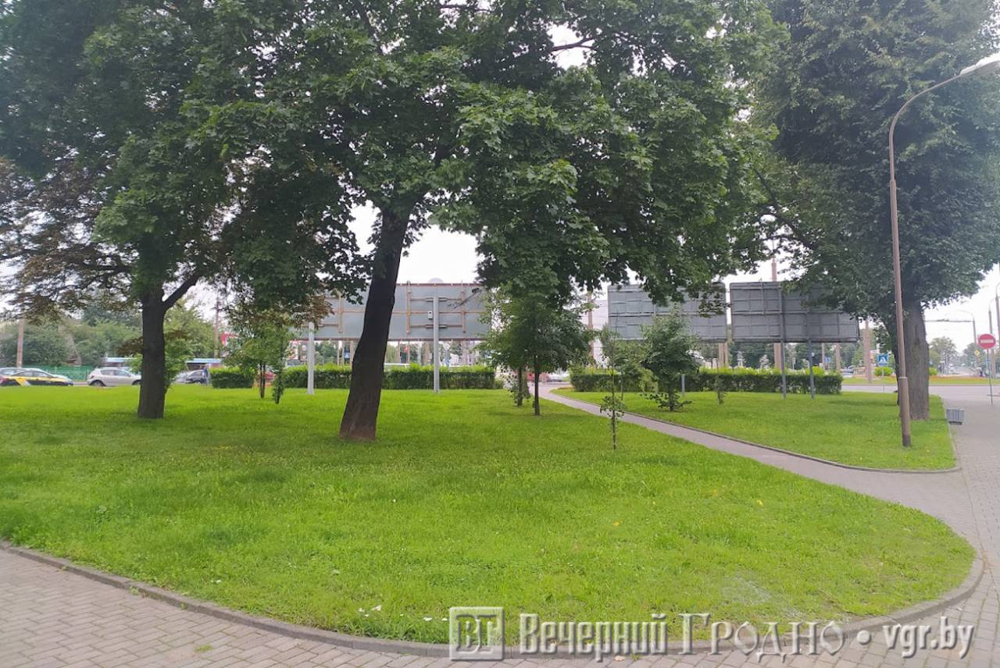

- «Романтика» всё: В Гродно меняют названия некоторых остановок
С 24 января меняются названия четырех остановок в городе Гродно. Об этом сообщает ОАО «Автобусный парк города Гродно».
- На легендарном «пьяном углу» в Гродно построят ресторан или кафе
Городские власти все-таки выделили землю под строительство ресторана или кафе рядом с кольцом на улице Горновых в Гродно.
 В обменниках Гродно доллар уже по 2,62 рубля, евро приближается к 3 рублям
В обменниках Гродно доллар уже по 2,62 рубля, евро приближается к 3 рублям
Сейчас самый низкий курс, по которому можно купить доллары, установился на отметке в 2,62 рубля.
- «Остаётся только один выход»: Гродненские предприниматели рассказали, что будет с ценами после поднятия налогов для самозанятых и ИП
Скоро стрижка, ремонт машины или одежды, а также занятия у репетиторов, услуги «мужа на час» и аренда квартиры могут сильно подорожать.
 Налоговики теперь смогут проверить доходы и расходы любого белоруса за период 10 лет и более
Налоговики теперь смогут проверить доходы и расходы любого белоруса за период 10 лет и более
В Беларуси взялись за тех, кто живет не по средствам. С 1 января для тех, у кого расходы превышают доходы, подняли налог до 20%
 Только у половины белорусов номинальные зарплаты выше 1096 рублей
Только у половины белорусов номинальные зарплаты выше 1096 рублей
Медианная заработная плата в Беларуси за ноябрь 2021 года составила 1096,2 рубля. С мая она выросла на 78 рублей.